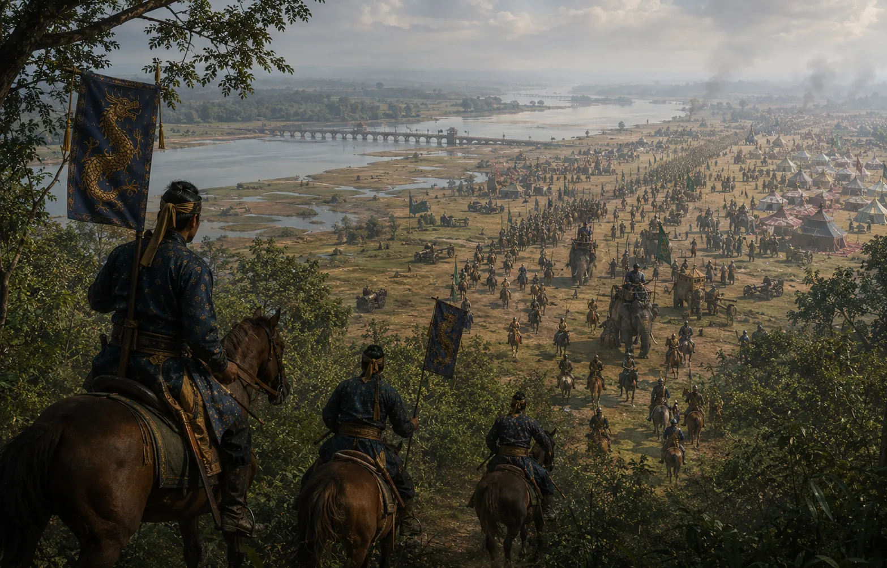

Mir Jumla's Imperial Mughal Invasion
1662 · Against the Mughal Empire

Aurangzeb's premier general and Viceroy of Bengal, Mir Jumla, advances up the Brahmaputra with 12,000 cavalry, 30,000 infantry, and 323 armed war boats.
Sources have not yet been catalogued for this record.
People: Dilir Khan, Jayadhwaj Singha (Sutamla), Mir Jumla